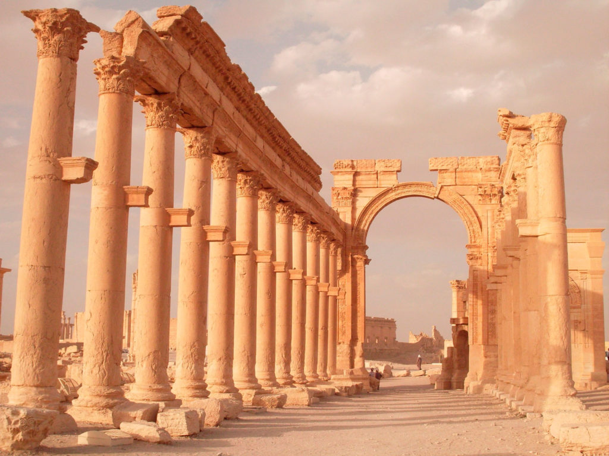
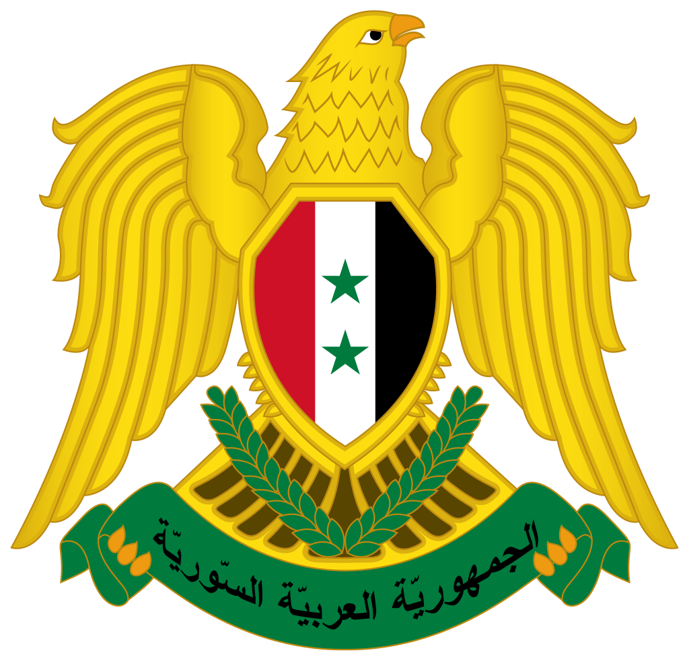
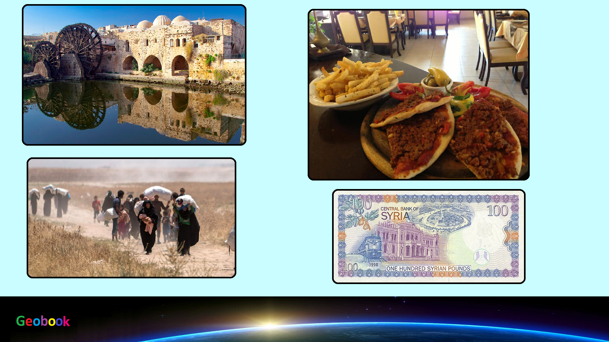

×

Syria
Флаг
Цвета флага традиционны для флагов арабских стран. Две звезды изначально символизировали Египет и Сирию, две страны, вошедших в Объединённую Арабскую Республику. Сейчас они сохранены, чтобы продемонстрировать приверженность Сирии арабскому единству. Зелёный цвет — цвет Фатимидов, белый — Омейядов, чёрный — Аббасидов и красный — цвет династии Хашимитов (был добавлен, когда шериф Хуссейн присоединился к Арабскому восстанию в 1916 г.).
Герб
Герб Сирии представляет собой золотого «ястреба курайшитов», смотрящего влево, имеющего на груди щиток цветов государственного флага — красная, белая и чёрная вертикальные полосы с двумя зелёными пятиконечными звездами посередине. В лапах ястреб держит зелёный свиток, на котором написано название государства на арабском языке: الجمهورية العربية السورية (аль-Джумхури́йя аль-Араби́йя ас-Сури́йя). На хвосте — два расходящихся зелёных пшеничных колоса.

____
